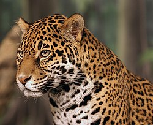

Welcome to my Website
This is a simple HTML page.äöü
Gallery
Anfang
Brasilien (portugiesisch Brasil, gemäß Lautung des brasilianischen Portugiesisch [bɾaˈziu̯] Ausspracheⓘ/?), amtlich die Föderative Republik Brasilien, ist der Fläche nach der fünftgrößte und mit rund 203 Millionen Einwohnern[7] der Bevölkerung nach der siebtgrößte Staat der Erde und der größte Staat der Südhemisphäre. Nach Fläche und Bevölkerung ist es auch das größte Land Südamerikas, von dessen Fläche es 47,3 Prozent einnimmt.[8] Bis auf die Länder Chile und Ecuador hat Brasilien mit jedem anderen südamerikanischen Staat eine gemeinsame Grenze. Der Name Brasilien geht auf den portugiesischen Namen pau-brasil des Brasilholz-Baumes (Paubrasilia echinata) zurück.
Gemäß einem „Sensationsfund“ sollen die Spuren menschlicher Besiedlung ca. 30.000 Jahre zurückreichen,[9] nach der bislang geltenden Auffassung der Wissenschaft jedoch maximal 15.000 Jahre. Nach der europäischen Entdeckung Amerikas und der Aufteilung des südamerikanischen Kontinents durch den Vertrag von Tordesillas wurde Brasilien eine portugiesische Kolonie. Diese mehr als drei Jahrhunderte andauernde Kolonialzeit, in der Einwanderer verschiedenster Herkunft (als Siedler oder als Sklaven) nach Brasilien kamen, trug erheblich zur heutigen ethnischen Vielfalt Brasiliens bei. Nach der im Jahre 1822 erlangten staatlichen Unabhängigkeit, auf die eine Zeit der konstitutionellen Monarchie folgte, wurde das Land 1889 als Vereinigte Staaten von Brasilien zu einer Republik. Nach der Zeit der Militärdiktatur ab 1964 kehrte das Land 1985 zur Demokratie mit einem präsidentiellen Regierungssystem zurück.
Landesname
Der Name Brasilien geht auf den portugiesischen Namen pau-brasil des Brasilholz-Baumes (Caesalpinia echinata) zurück, der zur Zeit der frühen Kolonisation ein wichtiges Ausfuhrprodukt aus den Wäldern der Atlantikküste war. Brasa bedeutet im Portugiesischen „Glut“ und „glühende Kohlen“; das Adjektiv brasil („glutartig“) bezieht sich auf die Farbe des Holzes, das, wenn geschnitten, rot leuchtet (Brasilin) und in Europa zum Färben von Stoffen benutzt wurde.
Seit 1325 findet sich auf Karten eine westlich von Irland gelegene Phantominsel namens Brasil. Laut dem Brief eines englischen Agenten an Christoph Kolumbus aus dem Jahr 1498 soll sie etwa 1480 von Seeleuten aus Bristol entdeckt worden sein. Der Verfasser des Briefes identifiziert sie mit dem von dem venezianischen Seefahrer Giovanni Caboto 1497 entdeckten Land, das heißt mit Neufundland.[10]
Geographie
Brasiliens Landschaft ist von ausgedehnten tropischen Regenwäldern des Amazonas-Tieflands im Norden und Hochebenen, Hügeln und Gebirgen im Süden geprägt. Während die landwirtschaftliche Basis des Landes im Süden und in den Savannengebieten des Mittelwestens (Cerrado) liegt, lebt der Großteil der Bevölkerung in der Nähe der Atlantikküste, wo sich auch fast alle Großstädte befinden. Die Küste hat eine Länge von 7491 km,[11] der Großteil davon sind Sandstrände.
Brasilien hat zehn Nachbarstaaten. Es grenzt – mit Ausnahme von Chile und Ecuador – an alle südamerikanischen Staaten (von Nordosten gegen den Uhrzeigersinn gesehen mit den Grenzlängen): an Frankreich (Französisch-Guayana) mit 730 km, Suriname mit 593 km, Guyana mit 1298 km, Venezuela mit 1819 km, Kolumbien mit 1645 km, Peru mit 2995 km, Bolivien mit 3400 km, Paraguay mit 1290 km, Argentinien mit 1132 km und Uruguay mit 985 km. Die gesamte Grenzlänge beträgt 15.887 km. Brasilien hat damit nach China und Russland die drittlängste Landgrenze der Erde.
Der kontinentale Teil Brasiliens liegt in zwei Zeitzonen, einige vorgelagerte Inseln gehören zu einer dritten. Siehe hierzu: Zeitzonen in Brasilien.
Höchste Berge
Der höchste Gipfel ist der 2994 m hohe Pico da Neblina (Aussprache: ˈpiku dɐ neˈblĩnɐ), der im gleichnamigen Nationalpark nahe der Grenze zu Venezuela und Guayana liegt. Der zweithöchste Berg ist der Pico 31 de Março (2973 m) (Aussprache: ˈpiku ˈtɾĩtɐ jũ dʒi ˈmaʁsu). Der dritthöchste Berg – und der höchste im brasilianischen Bergland – ist der Pico da Bandeira (2891 m) (Aussprache: ˈpiku dɐ bɐ̃ˈdejɾɐ). Berühmter allerdings sind der 710 m hohe Corcovado mit der 30 m hohen Erlöser-Statue wegen seines Blickes über Rio de Janeiro sowie der seiner konischen Form wegen berühmte 395 m hohe Zuckerhut.
Gewässer
Flüsse
Der Amazonas ist mit einer Wasserführung von 209.000 m³/s der wasserreichste Fluss der Erde, größer auch als die weltweit sieben nächstkleineren Flüsse zusammengenommen. Der ganze Fließweg des Amazonas misst 6448 km; in dieser Hinsicht wird er nur noch vom wesentlich wasserärmeren Nil in Afrika übertroffen. Die bedeutendsten Nebenflüsse, der Rio Madeira und der Rio Negro, sind bereits mit den größten Strömen anderer Kontinente vergleichbar. Weitere Flüsse ähnlicher Größenordnung sind der Rio Icá und der Rio Tapajós.
Der Süden Brasiliens gehört bis auf einen schmalen Küstenstreifen zum Einzugsgebiet der Flüsse Uruguay (1790 km) und Paraná (3998 km). Der Paraná ist fast durchgehend aufgestaut; in Itaipú liegt das zweitgrößte Wasserkraftwerk der Welt. Einer seiner Nebenflüsse hat dem Staat Paraguay seinen Namen gegeben; ein anderer ist durch die Iguazú-Wasserfälle bekannt. Siehe auch: Liste der Flüsse in Brasilien
Seen
Die Lagoa dos Patos bei Porto Alegre ist mit über 10.000 km² die größte Lagune Brasiliens und die zweitgrößte Südamerikas. Danach kommt die weniger als halb so große Laguna Merín, südlich der Stadt Rio Grande.
Inseln
Zum brasilianischen Hoheitsgebiet gehören auch einige Inseln im Atlantik, z. B. die etwa 800 km vor der Küste gelegenen Sankt-Peter-und-Sankt-Pauls-Felsen, die nur mit einem Leuchtturm bebaut sind, und die ehemalige Sträflingskolonie Fernando de Noronha, die nicht weit von der Felsgruppe entfernt ist. Beide liegen auf dem mittelatlantischen Rücken. Vulkanischen Ursprungs sind die Inseln Trindade und Martim Vaz, die zum Bundesstaat Espírito Santo gehören. Das ovale Rocas-Atoll erstreckt sich über mehrere Kilometer und wurde aufgrund der außergewöhnlichen Tier- und Pflanzenwelt als Weltnaturerbe aufgenommen.
Die größte Insel aber ist Marajó zwischen den Mündungen des Amazonas und des Rio Pará, der zum Mündungsgebiet des Rio Tocantins gehört. Sie ist mit einer Fläche von etwa 48.000 km² größer als beispielsweise die Schweiz. Da aber große Teile in der Regenzeit überschwemmt sind, ist die Insel nur an einigen Orten besiedelt. Da das Nordufer von Marajó eine Meeresküste ist, gilt die etwas kleinere Ilha do Bananal im Rio Araguaia mit ihrer Fläche von 20.000 km² als größte Flussinsel der Welt. Sie liegt in einem Nationalpark im Bundesstaat Tocantins und ist größer als beispielsweise Jamaika.
Klima
Das Klima Brasiliens, das zwischen 5° nördlicher Breite und 34° südlicher Breite liegt, ist überwiegend tropisch mit geringen jahreszeitlichen Schwankungen der Temperaturen. Nur im subtropischen Süden herrscht ein gemäßigteres Klima. Besonders im Amazonasbecken gibt es reichhaltige Niederschläge, man findet jedoch auch relativ trockene Landstriche mit teilweise lang anhaltenden Dürrezeiten, besonders im Nordosten des Landes.
In den höheren Lagen im Süden des Landes fällt im Winter der Niederschlag gelegentlich als Schnee. Im Süden befindet sich an der Grenze zu Bolivien und Paraguay ein ausgedehntes Feuchtgebiet, das Pantanal
Flora und Fauna
Noch vor Kolumbien, Mexiko und Indonesien ist Brasilien das artenreichste Land der Erde. Entdeckt wurden bislang unter anderem rund 55.000 Blütenpflanzen-, über 3000 Süßwasserfisch-,[12] 1154 Amphibien-,[13] 861 Reptilien-[14] und 532 Säugetier-Arten.
Aufgrund der enorm großen Biodiversität (die im atlantischen Küstenregenwald auf der Höhe des südlichen Wendekreises die vierthöchste der Welt ist), der großen Zahl von endemischen Arten, Gattungen und Familien und den vielfältigen Ökosystemen gehört Brasilien zu den Megadiversitätsländern dieser Erde.
Vor allem, weil die Waldflächen stetig verkleinert werden, ist ein hoher Anteil der Tierarten in seinem Bestand gefährdet. Dennoch ist die Vielfalt Amazoniens aufgrund der großen Flächen weitestgehend unberührter Wildnisregionen noch nicht gefährdet. Die Ökoregionen Mata Atlântica (Regenwald) und Cerrado (Savannen) werden hingegen aufgrund der großen Gefährdungslage zu den Biodiversitäts-Hotspots der Erde gerechnet (vgl. Abschnitt Umwelt).
Der immergrüne tropische Regenwald des Amazonasgebiets ist die größte zusammenhängende Waldfläche Brasiliens. Bislang wurden dort mehr als 2500 Baumarten entdeckt. Fast alle dieser bis zu 60 m hohen Bäume finden sich im von Überschwemmungen verschonten Eté-Wald der Terra Firme, die 98 % des Amazonasgebiets umfasst. In diesem Gebiet wachsen u. a. der Gummibaum (caucho), verschiedene Farb- und Edelhölzer (z. B. Palisander), Fruchtbäume (z. B. Paranussbaum) und Heilpflanzen. Auffällig sind die etwa 1000 verschiedenen Farn- und Orchideenarten.
Neben der Terra firme gibt es die Várzea, die bei Hochwasser überschwemmt ist. Dort wachsen Jupati- und Miriti-Palmen. Das Igapó-Gebiet ist dagegen ständig überschwemmt. Als typische Pflanze in diesem Gebiet gilt die Açaí-Palme. Auf dem Amazonas, aber vor allem auf seinen Nebenflüssen, wachsen Seerosen, deren Blüten 30 bis 40 cm groß werden können. Entlang der Küste Amazoniens (mit Ausnahme der eigentlichen Amazonasmündung) finden sich ausgedehnte Mangrovenwälder, die allerdings mit sechs Mangrovenbaum-Arten verhältnismäßig artenarm sind.
Besonders bekannt sind im gesamten Amazonasgebiet vor allem Papageien und Tukane. Es sind extrem viele Insekten- und Schmetterlingsarten bekannt. Größere Waldtiere sind der Tapir, das Pekari, der Jaguar und der Puma. Daneben bevölkern kleinere Wildkatzen, Affen, Faultiere, Gürteltiere und Ameisenbären den Regenwald.
. An den Ufern und Flachwässern leben Anakondas, Kaimane und Capybaras („Wasserschweine“ – die größten Nagetiere der Welt) und weitere Säugetiere wie Riesenotter, Flussdelfine und Seekühe im tieferen Wasser. Auch zahlreiche Fischarten (etwa 1500) sind im Amazonas beheimatet.
Darunter einer der größten bekannten Süßwasserfische der Welt: Der Pirarucú ist 2 m lang und wiegt etwa 100 kg. Ein Zitteraal, der 800-Volt-Stromschläge austeilt, und die Piranhas, manche Arten gut 30 cm lang, sind ebenso außergewöhnlich.
Der äußerste Nordosten Brasiliens, früher ebenso aus Regenwald bestehend, wird mittlerweile fast ausschließlich für Zuckerrohr-Plantagen und den Anbau von Baumwolle genutzt. Vereinzelt lassen sich noch Mangroven und Palmenhaine finden.
Die typische Vegetation des semiariden Berg- und Hochlandes im Zentrum (Cerrado) und im Nordosten des Landes (Sertão) ist die Savanne, von Baum- und Grassavannen, nach Nordosten hin, zu mit Laubbäumen durchsetzter Strauchsavanne. Typische Bewohner dieser Trockenzonen sind Großer Ameisenbär, Mähnenwolf, Pampashirsch, Nandu und verschiedene Gürteltiere.
All diese Arten und daneben auch große Raubkatzen wie Jaguare und Pumas werden etwa im Nationalpark Emas, der eine Welterbestätte bildet, geschützt.
Das Pantanal weist eine noch größere Tier- und Pflanzenvielfalt auf. Charakteristisch sind neben zahlreichen Vogelarten Flachlandtapir, Sumpfhirsch, Wasserschwein und Kaiman. Die Sumpfregion im Mittelwesten des Landes steht sieben Monate im Jahr unter Wasser. Höher gelegene Gebiete der Region sind überwiegend Savanne. Wie auch in denen des Cerrado und sogar im Amazonasgebiet machen sich dort Weiden für Rinder breit.
In den küstennahen Gebirgen des Südens und Südostens finden sich die Schwerpunkte der kolonialen Erschließung und die am dichtesten besiedelten Gebiete. Anstelle des ursprünglichen atlantischen Regenwaldes, Lebensraum für Affen und zahlreiche andere Tierarten, dominieren Kaffeeplantagen. Die ursprüngliche Vegetation ist nur noch in einigen Nationalparks zu finden.
Der Süden zeigt subtropische Vegetation; die ursprünglichen Wälder aus Araukarien, die eine Höhe von bis zu 40 m erreichen, wurden größtenteils für Holzgewinnung zerstört. Heute sind Niedergrassteppen in dieser Region häufiger.
Naturschutz
In Brasilien gibt es 62 Nationalparks (Parques Nacionais). Schutzgebiete ähnlichen Charakters gibt es unter dem Namen Estação Ecológica. Es gibt auch Schutzgebiete der Bundesstaaten (Parques Estaduais) und auf Gemeindeebene. Diese und weitere Flächen wurden wegen ihrer ökologischen, wissenschaftlichen, touristischen und erzieherischen Bedeutung unter Schutz gestellt. Einige Organisationen, die sich Natur- und Artenschutz verschrieben haben, sind
here are one link to other video
Video- Minecraft
- Roblox
- Brawl Stars
- Among us